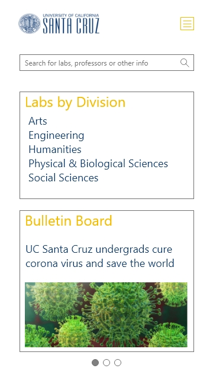

Elizabeth Dinh
UCSC Undergraduate Research Opportunities
Introduction
The Undergraduate Research Opportunities website is offered to UCSC undergraduate students as a resource for them to explore research labs that are open for them to join and get information--such as scholarships, preparing to join a lab, and emailing professors.
|
Role(s)
UX Designer
UX Researcher
Date
Jan 2020 – Mar 2020
|
Target Audience
Users of the UCSC undergraduate research website are typically UCSC undergraduate students and professors. Specifically, this website attracts undergraduate students who are interested in graduate school and need labs to apply to graduate programs. It also lures in professors seeking students to help with their labs.
Needfinding
Based off eight interviews of UCSC students who have worked as undergraduate research assistants, students wanted the following in the website:
- Easy access to information on current available lab positions
- Efficient communication with graduate students and professors
- Information on what it’s like to be in a research lab
- Guidance on applying to labs and how will labs help with future plans
Needfinding Questions
- Asking about person’s background; What is your major/year?
- Have you considered/been interested in research?
- IF YES: What is your opinion on doing research as an undergrad student/participating in? What kind of research opportunities are you interested in?
- IF NO: What is your idea of research?
- IF UNSURE: What would pique your interest in research?
- How do you feel about knowing where to find undergraduate research?
- If you wanted to get involved in undergraduate research, what would you do?
- Are you currently involved with research?
- IF YES: How did you find out about your current position? What is your opinion on research?
- IF NO: Move on
- Have you used the site?
IF YES: How much? What did you do on the website? Why were you on the website?
IF NO: Have you previously heard of the website?
- Where do you find news about research?
- What is your idea of a research website? What would you want out of a research website; What do you look for in a research website?
- What kind of information would you want to get with this website?
Heuristics Analysis
After running heuristic evaluations on the currently deployed website, we found major flaws:
- The website is too cluttered in both the navigation menu and page content
- The search bar doesn’t give users feedback
Wireframes
Based on our findings from interviews and heuristic evaluations, Ivy and I created two different wireframes to use for user testing. Ivy sketched out prototype A, whereas I worked on prototype B.
Problems
After running eight user evaluations using A/B testing and WoZ testing, we found that:
- Occasionally, users struggled with finding contact info for labs
- Users did not have an easy way out if they got stuck or were confused
- Users tend to use the search bar to find information when they don’t know which link to click on
- Interviewees seemed to have an easier time using prototype B based on after-survey responses and time taken to complete tasks in both prototypes
Tasks Used to Measure Performance
- Find what labs have current openings for undergraduate research assistants.
- Find more information about research in your major or other majors you are interested in.
- Find contact information for grad students and professors in a research lab.
Solutions
We simplified the menu structure and made link names more intuitive to prevent users from being confused and overwhelmed.



We also gave users an FAQ page and feedback as they type in letters into the search bar.